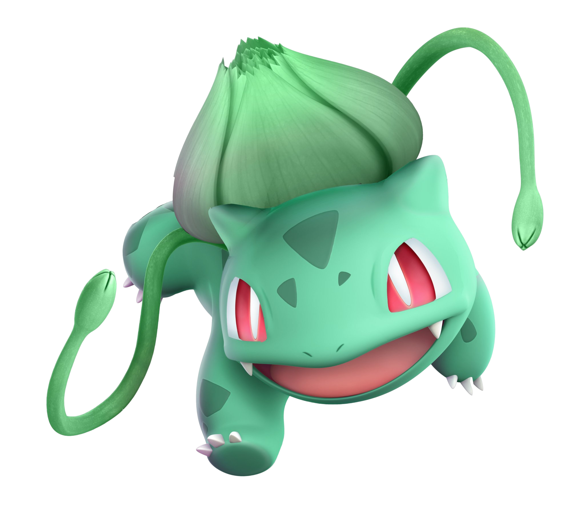
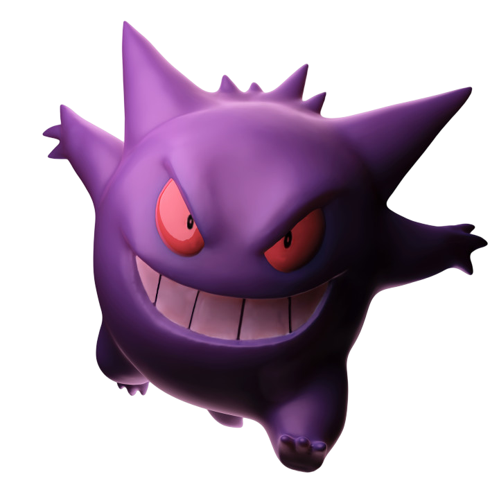
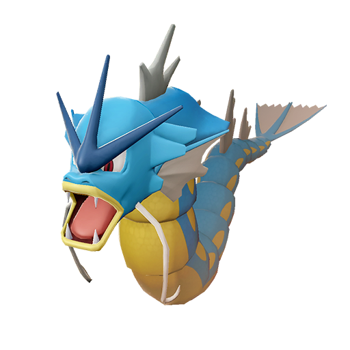

-
Pikahcu
HP 300

Descrição
Os Pikachus são pequenos roedores de quarenta centímetros e de seis quilogramas, com um corpo redondo, pernas curtas e uma longa cauda, quando macho, a cauda tem um formato de um raio, mas se o Pikachu for fêmea sua cauda ganha um coração na ponta.
-
Charizard
HP 800

Descrição
Geralmente, um Charizard é competitivo. Ele adora a batalha e seu espírito competitivo também é notável, uma vez que nunca vai cuspir fogo em um inimigo mais fraco a menos que provocado ou ordenado. Quando fica muito irritado, as chamas em sua cauda se tornam branco-azuladas.
-
Mewtwo
HP 1200

Descrição
Mewtwo foi criado geneticamente em um laboratório, sendo um clone do misterioso antigo Pokémon Mew. É uma criatura com uma postura humanóide, mas tem algumas características felinas.
-
Bulbasaur
HP 320
Descrição
Bulbasaur é uma criatura quadrúpede réptil que lembra um dinossauro jovem, com um azul-verde manchado. Ele tem três dedos brancos ou garras crescendo fora de suas quatro pernas, e seus olhos são de um vermelho brilhante.
-
Gengar
HP 100
Descrição
Gengar, um Pokémon que espreita nas sombras, é um mestre dos ataques-surpresa. Ele consegue aparecer sorrateiramente por trás dos oponentes sem dar um pio. Além disso, o Movimento Unite de Gengar, Emboscada Fantasma, torna-o invisível. É realmente um movimento digno de Gengar, o Pokémon Sombra.
-
Gyarados
HP 300
Descrição
Gyarados é um Pokémon do tipo Água introduzido na Geração I. É a evolução de Magikarp e o que o destaca é que sua aparência muda drasticamente ao evoluir e o fato do poder dele aumentar de forma drástica.